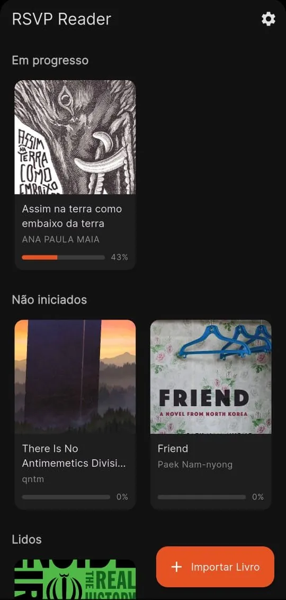
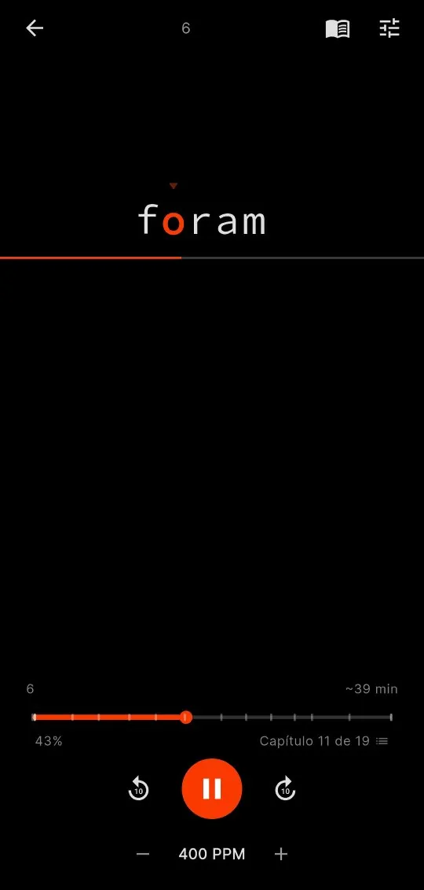
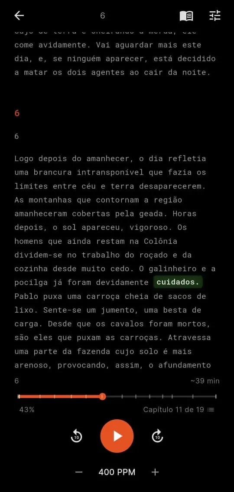
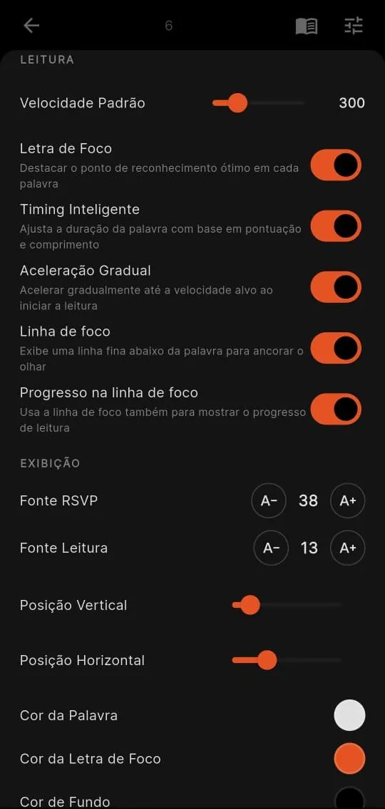

Leitura RSVP · EPUB + artigos web · código aberto
As palavras vêm até você.
Uma palavra de cada vez, no ritmo que você escolher, com a letra de foco sempre no mesmo lugar. Seus olhos param de correr atrás do texto, a distração some e a velocidade sobe sem esforço. Aperte o play aí do lado.
Grátis, sem anúncios, sem conta. Licença MIT.
Três modos, o mesmo livro
Pausou o RSVP ou o TTS? O texto completo aparece com a palavra atual destacada, no mesmo ponto. Toque em outra palavra pra seguir dali.
RSVP
Uma palavra por vez, com a letra de foco em destaque. O modo mais rápido, feito pra devorar capítulos.
TTS
Ledor é quem lê em voz alta pra outra pessoa. Aqui o app faz jus ao nome: narra o livro destacando cada palavra, mesmo com a tela bloqueada.
E-reader
Leitura tradicional, sem destaques nem controles. Só você e o texto.
Um livro, todos os seus aparelhos
Comece no celular no ônibus, continue no tablet no sofá, termine no desktop. Biblioteca, progresso, marcadores e até o tema chegam juntos em todos os aparelhos, pelo seu próprio Google Drive.
- Sem servidor nosso, sem conta nova: a pasta fica no seu Drive, e o app só enxerga arquivos que ele mesmo criou.
- Sincroniza biblioteca, progresso por livro, marcadores, avaliações, sessões de leitura e configurações de exibição.
- Android, tablet e Linux desktop com o mesmo app. No tablet, biblioteca e leitor abrem lado a lado.
- Offline-first: o sync é opcional e o app funciona 100% sem internet.
Sua leitura, em números
Quantas palavras você leu esta semana? Em que velocidade? O Ledor registra cada sessão e transforma sua leitura em gráficos da semana e do mês. E no fim do mês ainda sai uma retrospectiva pronta pra compartilhar.
- Gráficos semanais e mensais de palavras por dia, tempo de leitura e tendência de WPM.
- Recap mensal em imagem 9:16 pronta pra stories, com livros terminados e em andamento.
- Terminou um livro? Tela de celebração com estatísticas, nota de 0 a 5 estrelas e card compartilhável.
- Tudo calculado no aparelho. Nenhum dado de leitura sai dele.
E o resto vem junto
Nada disso é extra pago. É só o app, inteiro, de graça.
EPUB + artigos web
Importe seus EPUBs ou salve qualquer artigo pela URL. No Android, é só compartilhar a página com o Ledor. Tudo vira a mesma leitura.
Narração TTS
Vozes do sistema com nomes amigáveis, controles na tela de bloqueio e velocidade de 0,5× a 3×.
Tema totalmente seu
Cores, fontes, tamanhos e posições, tudo com preview ao vivo. Temas claro e escuro com cara de página impressa.
Marcadores
Segure qualquer palavra, em qualquer modo, e ela vira marcador com um trecho do contexto. Sincronizado entre aparelhos, claro.
Offline-first
Seus livros e seu progresso moram no aparelho, não na nuvem. Internet só pra importar artigos ou sincronizar.
Timing inteligente
O ritmo respira como leitura de verdade: pausas maiores em pontuação, parágrafos e palavras longas, e aceleração suave quando você dá play.
Por dentro




É seu, de verdade.
Licença MIT, sem conta e sem servidor no meio do caminho. Seus livros ficam no seu aparelho e, se você quiser, no seu Drive. Quer mudar alguma coisa? Abra uma issue, mande um PR, ou faça um fork e deixe o leitor com a sua cara.